About US
Hi, my name is Christian Lindner and I'm from Huntsville, Alabama. I am a senior Computer Science student at the University of Alabama with two summers of internship within the government and private sector and I plan on pursuing a career in software development after I graduate. I enjoy many sides of Computer Science but the ones I am currently most interested in are Data Visualization, Geographic Information Systems, and Augmented or Virtual Reality. I like learning more about new tools or technologies emerging into the Computer Science space. I also am very interested in linguistics and language learning so WordBuds is a project I am very excited to help advance.
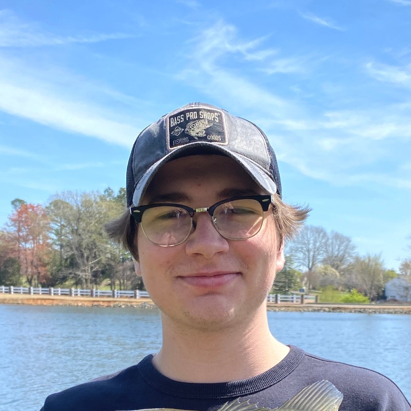
Hi, I'm Mae Olsen! I am a second semester senior at the University of Alabama double majoring in computer science and mathematics. My main skills lie in machine learning, probability, and statistics, with some robotics and data science. I am currently working on a bioinformatics research project through the biology department at UA and would like to continue studying and performing research on a Master's level starting next spring. Human-centered research is interesting and fulfilling to me, so WordBuds is a great fit.
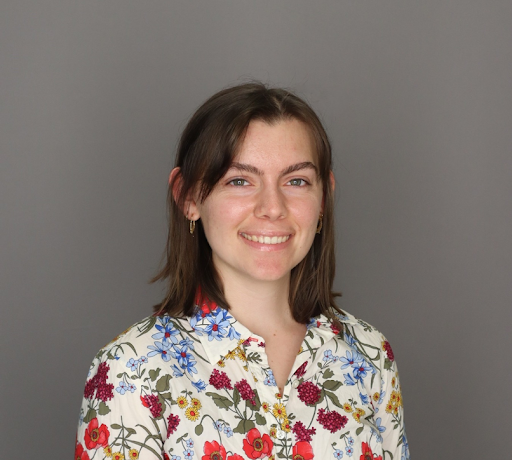
Hello! My name is Chris Phornroekngam and I am a computer science major with a concentration in cybersecurity. I have a strong interest in industrial automation, SCADA systems, and IoT devices. I am excited to work more in this world in the summer where I have accepted a role at Nucor Steel Decatur as a process engineer. I am originally from Huntsville, AL where my parents own a local Thai Restaurant. They are originally from Bangkok, Thailand, so naturally, I grew up speaking Thai and English. I take pride in my multi-ethnic background and adore teaching my friends more about the Thai language and culture. WordBuds is a perfect intersection of my passion for language acquisition and programming!

Hello, I'm Tucker Portis! I'm originally from Montgomery, Alabama, and I'm currently pursuing a Master's in Mathematics along with a Bachelor's in Computer Science and Mathematics at the University of Alabama. I'm especially interested in data science, data analytics, and machine learning. For example, I developed a Python based recommendation algorithm that predicts user preferences using linear regression and gradient descent. Outside of class, I previously served as Secretary for the ACM chapter on campus, where I helped connect students with guest speakers and internship opportunities. I will finish my Master's in December of this year, so this upcoming summer I am excited to be interning with Regions Bank in Hoover, AL. Overall, I really enjoy combining technical tools with real world applications, which is why opportunities like WordBuds are especially interesting to me.
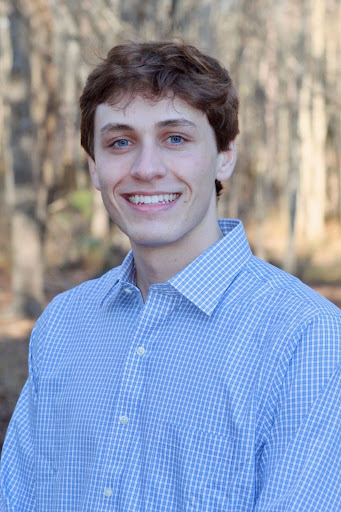
Hello, my name is Noah Wiechertjes, and I'm an aerospace engineering and computer science double major undergraduate student concurrently pursuing a master’s degree in the former. My main interest is in software for aerospace applications, especially navigation, control, and tracking systems. I’m from west Michigan, where my mother works as a special education teacher and frequently talks about speech and language acquisition topics, which made this project, WordBuds, particularly interesting to me. I look forward to leaving my mark on this impactful project.
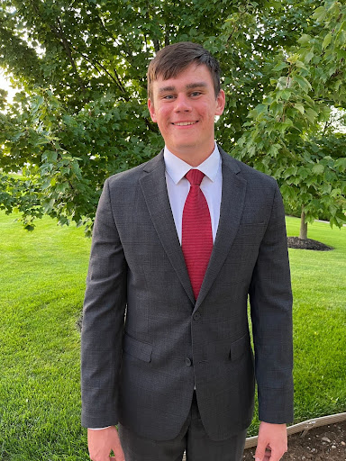
My name is Joe Schmith and I am a senior in Computer Science. I began my college journey in Purdue University's Professional Flight program but transitioned to Computer Science in 2021. I mostly enjoy mobile development, however I am currently working towards my goal of becoming a Network Engineer and moving away from software development for the most part. WordBuds is a great fit for me because I am able to learn more about mobile development and I also have family members who work with children that have speech difficulties.
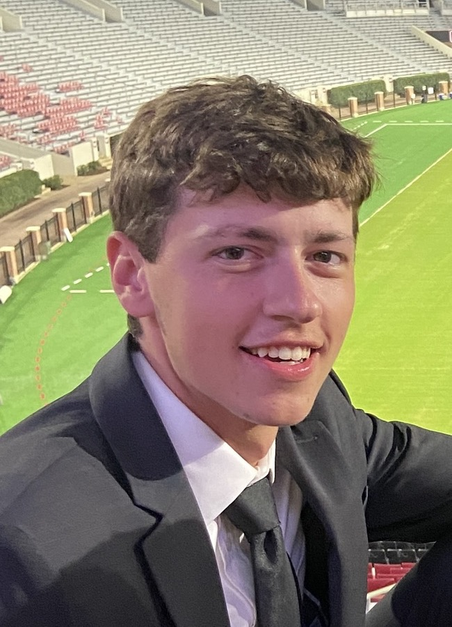
Hi! I'm Chase Compton, a Computer Science and Mathematics student at The University of Alabama. I've interned at Fetch Rewards, a startup called DevClarity, and Gusto — where I'll be joining full-time after graduation. On campus, I'm involved with the Culverhouse Investment Management Group. I've really enjoyed working on the WordBuds project and learning more about mobile development!
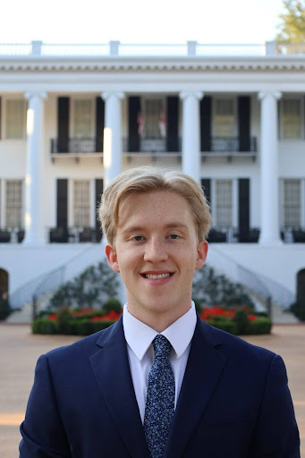
I'm a senior in Computer Science graduating this December 2025 also with a minor in mathematics. I have a passion for software engineering and I'll be joining Lockheed Martin after graduation. Some of my favorite hobbies include playing music on the organ or piano, hiking, and triathlon sports.
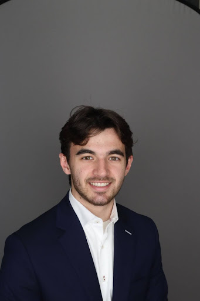
Hi, I'm Caitlin Seaborn. I am majoring in Computer Science and Computer Engineering with minors in Math and Digital, Public, and Professional Writing. I have interned at Middle Tennessee Electric and Mercedes-Benz, and work with the Battery Workforce Challenge on campus. I've really enjoyed working on WordBuds and gaining more development experience.
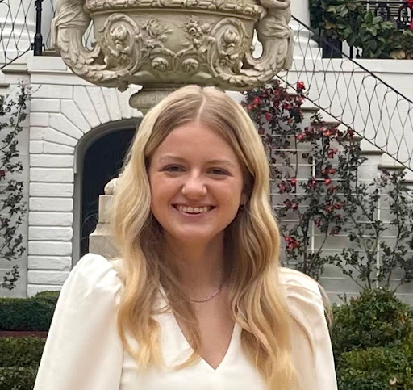
Hey! I'm Zimuzo, a senior majoring in Computer Science. I enjoy learning new technologies and building projects that push me to grow as a developer. After graduating, I plan to pursue a master's degree to deepen my skills and expand my opportunities. I especially enjoyed working on WordBuds because it gave me the chance to elevate and refine a project that had already been started.
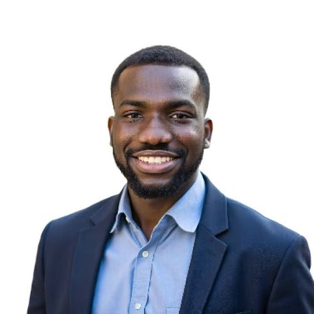
Hi, I'm Marcelo Torres! I am a computer science student at the University of Alabama. I have experience in robotics and web development. I also have minor experience in machine learning. I like working on new and interesting projects that can help make my world and community a better place.

Hi! I'm Cloie Dale! I am a currently a senior at the University of Alabama studying computer science. I am also pursuing my Master's in computer science through the Accelerated Master's Program. I am currently serving as the ACM-W meeting coordinator and as a senior member of the Alabama Astrobotics team. I also work as a Technology Security intern at Southern Company focusing on security logging and analytics.
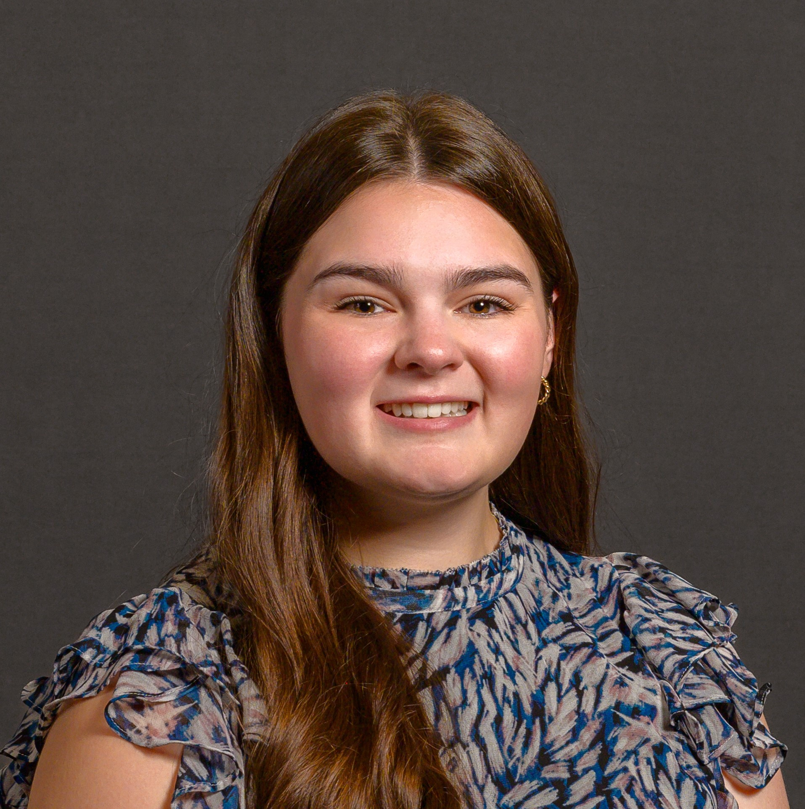
I'm Rob, CS and MBA Student at UA. I love linguistics but I have never interacted with it academically til now, so I'm really enthusiastic about this project! I'm on the water ski team, play volleyball, and sing a cappella in Tune In!

Hello! I'm Gwynevere Deterding and I'm a senior at the University of Alabama majoring in computer science and dance with a minor in mathematics. I am the treasurer of Dance Alabama Film Festival and the historian of the Dance Honor Society. I am so excited to work on this project!
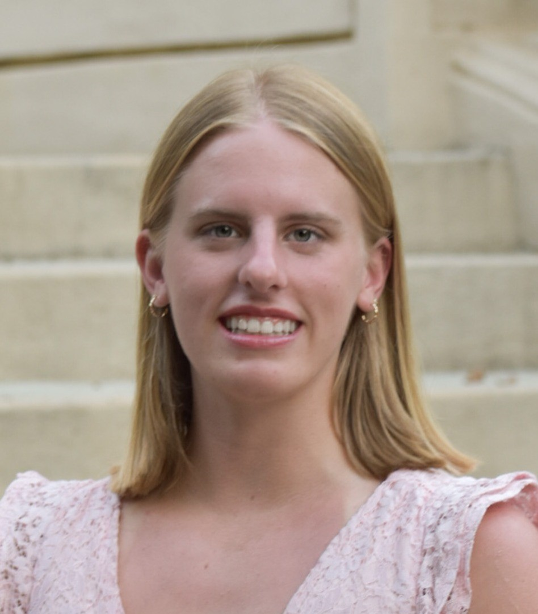